Prompts
Los prompts de mis tutoriales, para que los copies y los uses.
Muy pronto
Aquí irán los prompts de los tutoriales. Todavía no hay ninguno publicado.
Tu versión estilo GTA VI18 prompts · ilustración tipo pantalla de carga
Convierte una foto tuya en una ilustración inspirada en las pantallas de carga de GTA VI, manteniendo tu cara y en escenarios tipo Miami.
Cómo usarlos
- Abre un generador de imágenes que acepte una foto de referencia. Yo las hice con ChatGPT (modelo GPT-6 Astra Ligero), pero también funcionan en otros, como Nano Banana en Gemini o Google Flow.
- Adjunta una foto tuya con la cara bien iluminada y de frente.
- Copia el prompt completo y pégalo.
- Adáptalo a ti: cambia
long wavy burgundy-red hair and a small gold coin pendant necklacepor la descripción de tu pelo y tus accesorios, ylidiaconiapor tu nombre o usuario. Si la IA lo escribe mal, deletréalo:spelled L-I-D-I-A-C-O-N-I-A.
Trucos
- Si el texto sale deformado, déjalo fuera y añádelo después en Canva.
Serie 1 · Estilo casual
1Gasolinera de noche
Use the attached photo as the exact face reference: keep her facial features, smile, eye makeup and skin tone identical. Woman with long wavy burgundy-red hair and a small gold coin pendant necklace. Illustrated in the style of GTA VI loading screen art: bold ink outlines, painterly cel shading, saturated Miami-inspired palette, cinematic composition. Vertical 4:5 format. Standing next to a vintage muscle car at a neon-lit 24h gas station at night, filling the tank, looking over her shoulder at the camera with a confident smirk. Wearing an open black bomber jacket over a band t-shirt, dark jeans and boots. Wet asphalt reflecting pink and cyan neon, palm trees, humid haze. The gas station's big neon sign on the roof reads "lidiaconia" in pink cursive neon. The word "lidiaconia" must appear clearly and spelled exactly, all lowercase. No other logos.
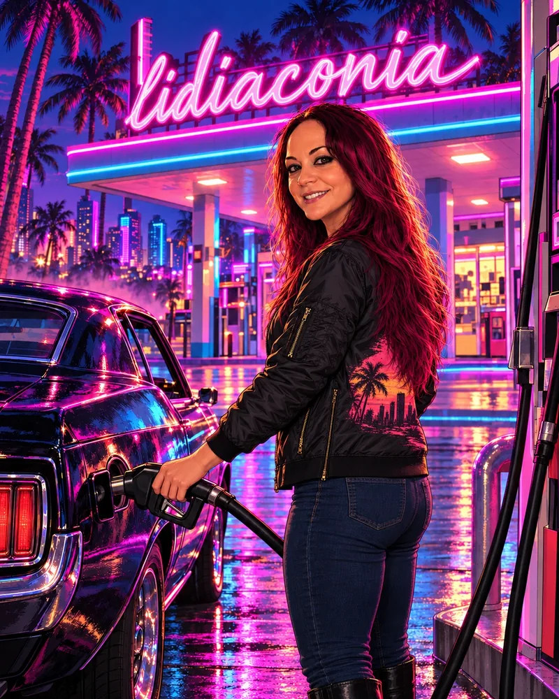
2Diner retro
Use the attached photo as the exact face reference: keep her facial features, smile, eye makeup and skin tone identical. Woman with long wavy burgundy-red hair and a small gold coin pendant necklace. Illustrated in the style of GTA VI loading screen art: bold ink outlines, painterly cel shading, saturated Miami-inspired palette, cinematic composition. Vertical 4:5 format. Sitting in a red vinyl booth of a 1980s roadside diner, leaning forward on her elbows with a milkshake and a laptop open on the table, laughing. Wearing an open short-sleeve bowling shirt with a palm print over a plain white t-shirt. Chrome details, checkered floor, sunset light through the window. The neon sign in the diner window reads "lidiaconia" in glowing cyan script. The word "lidiaconia" must appear clearly and spelled exactly, all lowercase. No other logos.
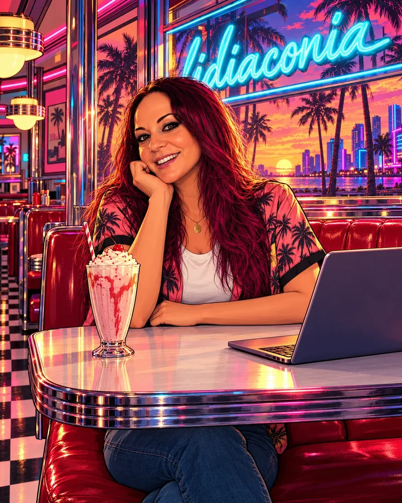
3Descapotable
Use the attached photo as the exact face reference: keep her facial features, smile, eye makeup and skin tone identical. Woman with long wavy burgundy-red hair and a small gold coin pendant necklace. Illustrated in the style of GTA VI loading screen art: bold ink outlines, painterly cel shading, saturated Miami-inspired palette, cinematic composition. Vertical 4:5 format. Side profile shot driving a white convertible along an ocean highway at golden hour, one hand on the wheel, hair blowing in the wind, aviator sunglasses. Wearing a loose linen shirt, casually open at the collar over a plain white t-shirt, sleeves rolled up. Bridge, skyline and palm trees blurred in motion behind her. The car's rear license plate reads "LIDIACONIA" in bold letters, clearly visible. The word "lidiaconia" must appear clearly and spelled exactly. No other logos.
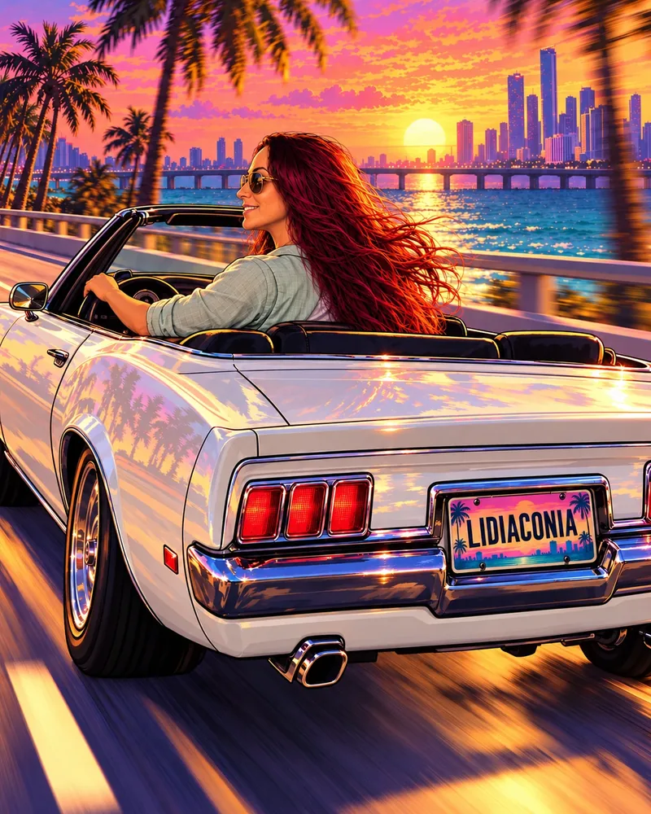
4Azotea con portátil
Use the attached photo as the exact face reference: keep her facial features, smile, eye makeup and skin tone identical. Woman with long wavy burgundy-red hair and a small gold coin pendant necklace. Illustrated in the style of GTA VI loading screen art: bold ink outlines, painterly cel shading, saturated Miami-inspired palette, cinematic composition. Vertical 4:5 format. Sitting cross-legged on a rooftop ledge at night with a glowing laptop on her lap, city skyline and neon reflections on the bay behind her, turning to smile at the camera. Wearing a black hoodie with the sleeves pushed up, cargo pants and sneakers. Holographic code lines floating subtly around the laptop. A large rooftop billboard behind her reads "lidiaconia" in glowing pink neon. The word "lidiaconia" must appear clearly and spelled exactly, all lowercase. No other logos.
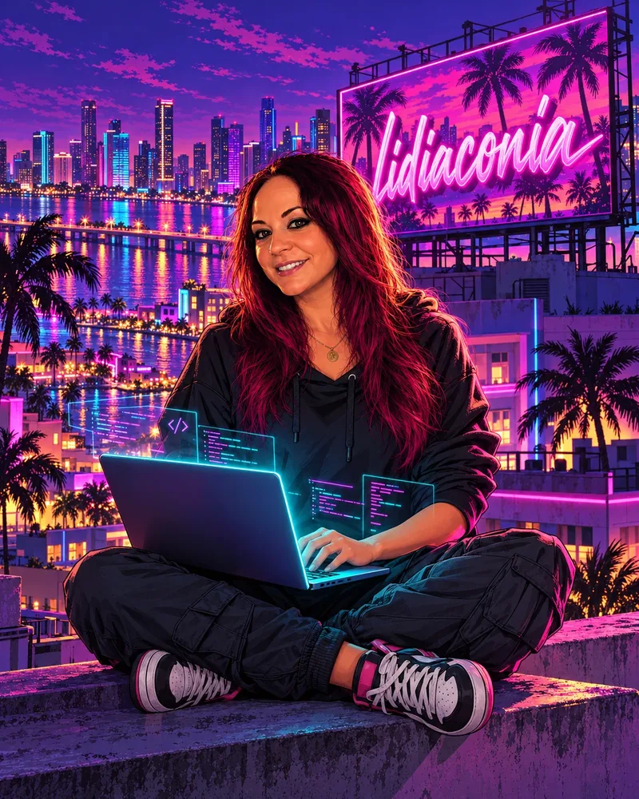
5Patines en el paseo marítimo
Use the attached photo as the exact face reference: keep her facial features, smile, eye makeup and skin tone identical. Woman with long wavy burgundy-red hair and a small gold coin pendant necklace. Illustrated in the style of GTA VI loading screen art: bold ink outlines, painterly cel shading, saturated Miami-inspired palette, cinematic composition. Vertical 4:5 format. Full-body action shot rollerskating along a beachfront boardwalk in daylight, mid-stride, arms out for balance, big smile. Wearing an open retro teal windbreaker over a plain white t-shirt, high-waisted pastel track pants and vintage skates. Pastel lifeguard tower, palm trees, other skaters in the background. A boardwalk sign next to her reads "lidiaconia" in large retro letters. The word "lidiaconia" must appear clearly and spelled exactly, all lowercase. No other logos.
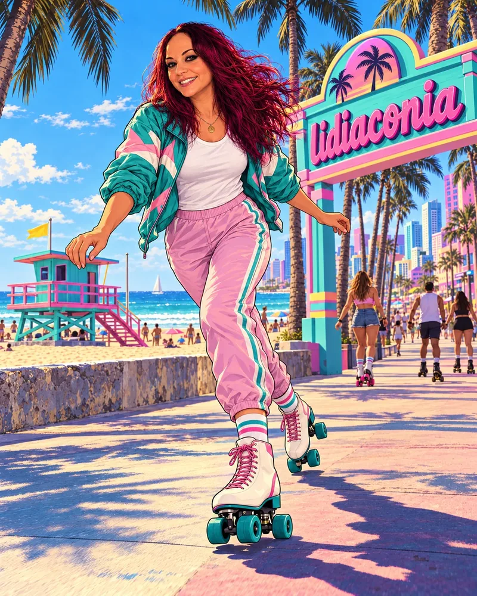
6Tienda 24h
Use the attached photo as the exact face reference: keep her facial features, smile, eye makeup and skin tone identical. Woman with long wavy burgundy-red hair and a small gold coin pendant necklace. Illustrated in the style of GTA VI loading screen art: bold ink outlines, painterly cel shading, saturated Miami-inspired palette, cinematic composition. Vertical 4:5 format. Standing at the counter of a cluttered convenience store at 3am, holding a slushie, giving a sly sideways glance to the camera. Wearing an oversized denim jacket over a plain black t-shirt and ripped jeans. Fluorescent lights, lottery tickets, snack shelves, security camera monitor in the corner. The store's neon sign above the counter reads "lidiaconia" in glowing pink letters. The word "lidiaconia" must appear clearly and spelled exactly, all lowercase. No other logos.
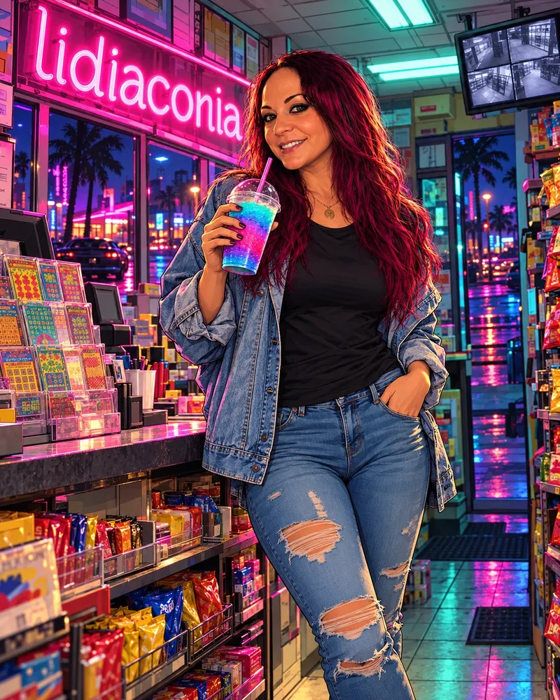
7Póster de «se busca»
Use the attached photo as the exact face reference: keep her facial features, smile, eye makeup and skin tone identical. Woman with long wavy burgundy-red hair and a small gold coin pendant necklace. Illustrated in the style of GTA VI loading screen art: bold ink outlines, painterly cel shading, saturated Miami-inspired palette, cinematic composition. Vertical 4:5 format. Close-up portrait from the chest up, arms crossed, raising one eyebrow with a mischievous smile, in front of a weathered wanted poster on a brick wall. Wearing an open black leather biker jacket over a plain black t-shirt. Gritty texture, dramatic side lighting. The poster reads "WANTED" at the top and "lidiaconia" in large bold letters at the bottom. The word "lidiaconia" must appear clearly and spelled exactly, all lowercase. No other logos.
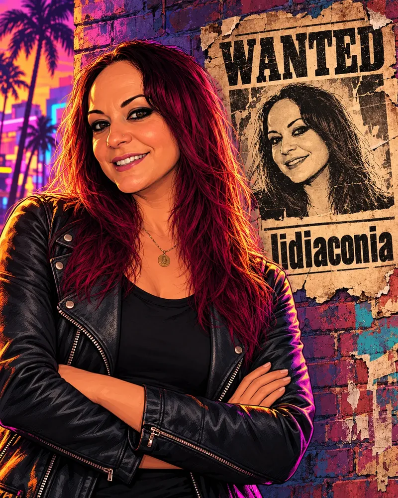
8Paseo de neón
Use the attached photo as the exact face reference: keep her facial features, smile, eye makeup and skin tone identical. Woman with long wavy burgundy-red hair and a small gold coin pendant necklace. Illustrated in the style of GTA VI loading screen art: bold ink outlines, painterly cel shading, saturated Miami-inspired palette, cinematic composition. Vertical 4:5 format. Walking toward the camera down a neon-lit beachfront avenue at night, mid-step, hands in jacket pockets, confident smile. Wearing a long pink satin bomber jacket, open, over a plain black t-shirt and black trousers. Art deco hotels with glowing signs, palm trees, wet reflective street. A huge pink neon sign at the top of the image reads "@lidiaconia" in glowing script. The text "@lidiaconia" must appear clearly and spelled exactly, all lowercase. No other logos.
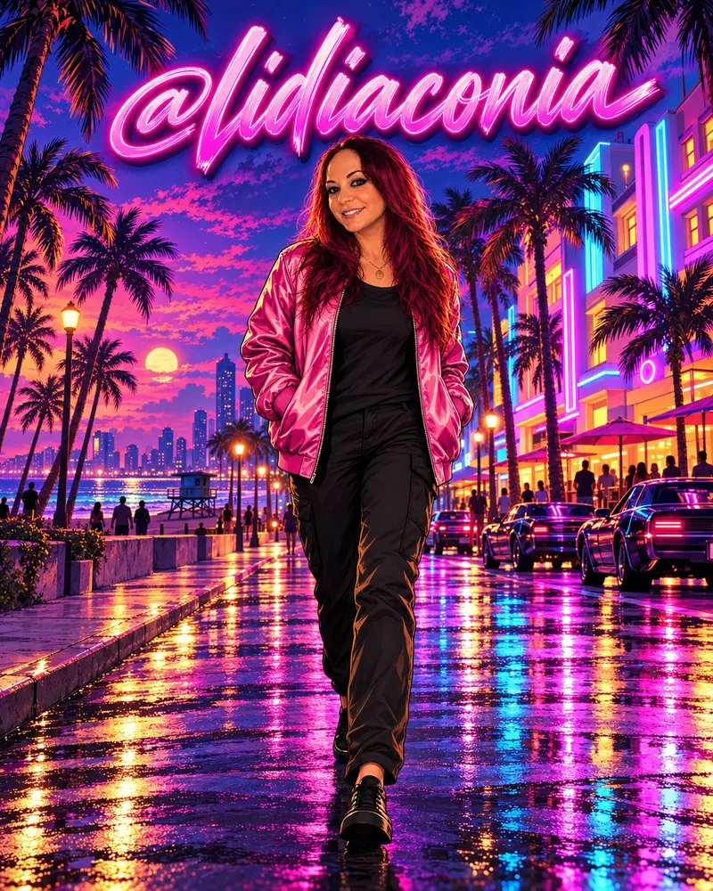
Serie 2 · Estilo glamour
9Neón en la puerta del club
Use the attached photo as the exact face reference: keep her facial features, smile, eye makeup and skin tone identical. Woman with long wavy burgundy-red hair and a small gold coin pendant necklace. Illustrated in the style of GTA VI loading screen art: bold ink outlines, painterly cel shading, saturated Miami-inspired palette, cinematic composition. Glamorous, confident and alluring, tasteful styling. Vertical 4:5 format. Leaning against a wall outside a nightclub at night, one hand in her hair, looking at the camera over her shoulder with a seductive half-smile and red lipstick. Wearing a fitted black off-the-shoulder long-sleeve dress with a straight neckline, gold hoop earrings. Pink and cyan neon light washing over her, wet street, palm trees. The club's neon sign above her reads "lidiaconia" in glowing pink script. The word "lidiaconia" must appear clearly and spelled exactly, all lowercase. No other logos.
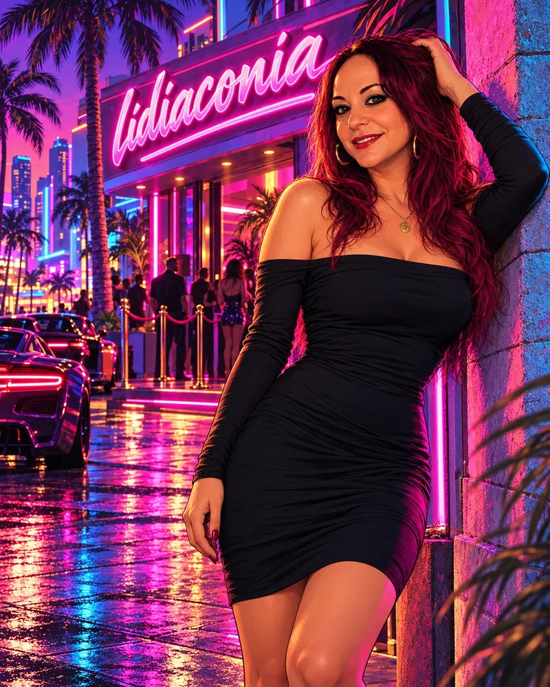
10Descapotable al atardecer
Use the attached photo as the exact face reference: keep her facial features, smile, eye makeup and skin tone identical. Woman with long wavy burgundy-red hair and a small gold coin pendant necklace. Illustrated in the style of GTA VI loading screen art: bold ink outlines, painterly cel shading, saturated Miami-inspired palette, cinematic composition. Glamorous, confident and alluring, tasteful styling. Vertical 4:5 format. Sitting on the back seat edge of a white vintage convertible parked by the ocean at sunset, legs crossed, sunglasses pushed up on her head, playful smile. Wearing a fitted red satin slip dress with a straight neckline and an open denim jacket over her shoulders. Golden backlight through her hair, palm trees, skyline. The car's license plate reads "LIDIACONIA" in bold letters, clearly visible. The word "lidiaconia" must appear clearly and spelled exactly. No other logos.
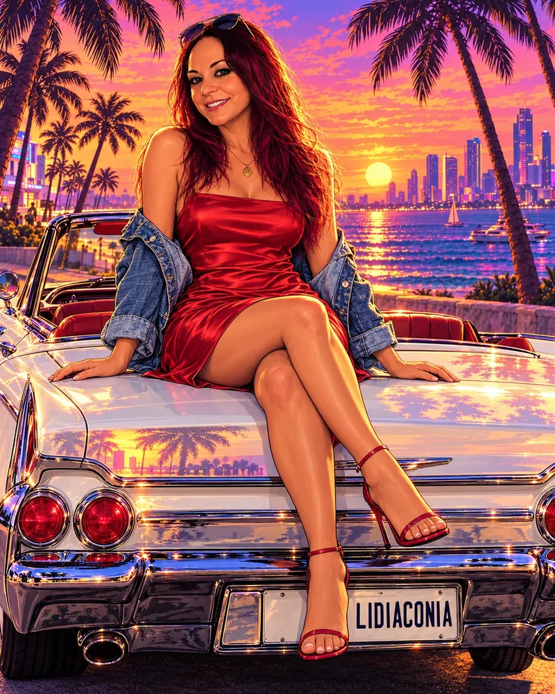
11Motera
Use the attached photo as the exact face reference: keep her facial features, smile, eye makeup and skin tone identical. Woman with long wavy burgundy-red hair and a small gold coin pendant necklace. Illustrated in the style of GTA VI loading screen art: bold ink outlines, painterly cel shading, saturated Miami-inspired palette, cinematic composition. Glamorous, confident and alluring, tasteful styling. Vertical 4:5 format. Leaning back against a black sport motorcycle on a bridge at dusk, holding her helmet at her hip, chin slightly down, intense confident look. Wearing a fitted black leather biker jacket, half-zipped, over a black tank top with a high scoop neckline, tight black leather pants and boots. Wind in her hair, purple and orange sky, city lights. The motorcycle's fuel tank has "lidiaconia" painted in pink racing letters. The word "lidiaconia" must appear clearly and spelled exactly, all lowercase. No other logos.
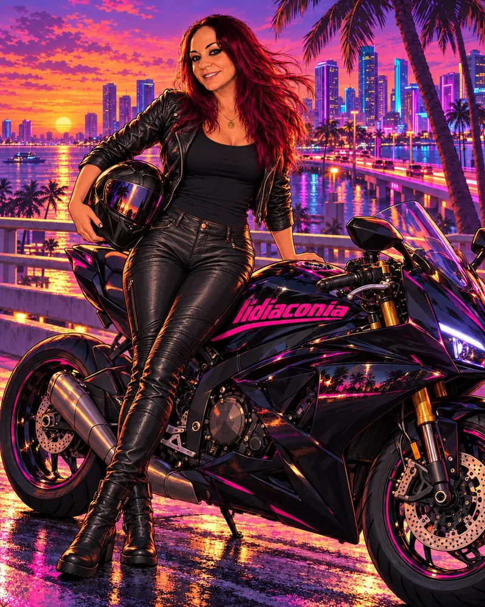
12DJ en la azotea
Use the attached photo as the exact face reference: keep her facial features, smile, eye makeup and skin tone identical. Woman with long wavy burgundy-red hair and a small gold coin pendant necklace. Illustrated in the style of GTA VI loading screen art: bold ink outlines, painterly cel shading, saturated Miami-inspired palette, cinematic composition. Glamorous, confident and alluring, tasteful styling. Vertical 4:5 format. DJing at a rooftop pool party at night, one hand holding headphones to her ear, the other on the mixer, smiling at the camera. Wearing a sparkly silver sequin one-shoulder top with a high neckline and high-waisted black leather pants. Crowd silhouettes, glowing pool, skyline and a light beam in the sky. The front of the DJ booth reads "lidiaconia" in glowing cyan neon. The word "lidiaconia" must appear clearly and spelled exactly, all lowercase. No other logos.
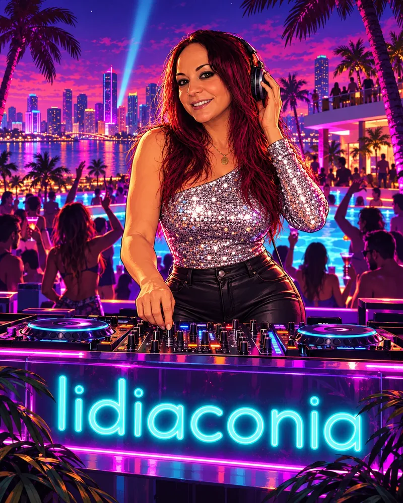
13Lancha en el mar
Use the attached photo as the exact face reference: keep her facial features, smile, eye makeup and skin tone identical. Woman with long wavy burgundy-red hair and a small gold coin pendant necklace. Illustrated in the style of GTA VI loading screen art: bold ink outlines, painterly cel shading, saturated Miami-inspired palette, cinematic composition. Glamorous, confident and alluring, tasteful styling. Vertical 4:5 format. Driving a speedboat across turquoise water, hair blowing wildly, aviator sunglasses, big carefree smile. Wearing a white linen button-up shirt knotted at the waist over high-waisted white linen trousers. Spray of water, palm islands and a yacht in the distance, bright sun. The boat's hull has "lidiaconia" painted in large stylish letters. The word "lidiaconia" must appear clearly and spelled exactly, all lowercase. No other logos.
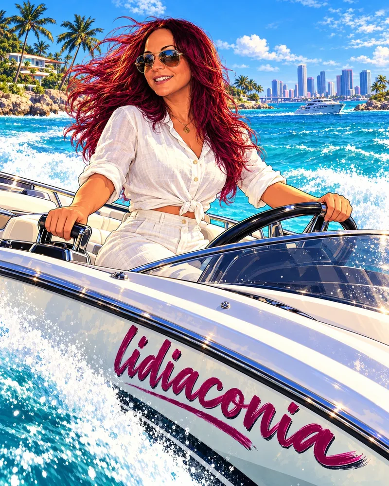
14Femme fatale en el casino
Use the attached photo as the exact face reference: keep her facial features, smile, eye makeup and skin tone identical. Woman with long wavy burgundy-red hair and a small gold coin pendant necklace. Illustrated in the style of GTA VI loading screen art: bold ink outlines, painterly cel shading, saturated Miami-inspired palette, cinematic composition. Glamorous, confident and alluring, tasteful styling. Vertical 4:5 format. Leaning on a roulette table in a luxurious casino, holding a stack of chips, raising one eyebrow with a sly smile. Wearing an elegant fitted emerald satin dress with a high halter neckline and bare shoulders, gold earrings. Warm golden light, chandeliers, blurred gamblers behind. A neon sign on the back wall reads "lidiaconia" in gold script. The word "lidiaconia" must appear clearly and spelled exactly, all lowercase. No other logos.
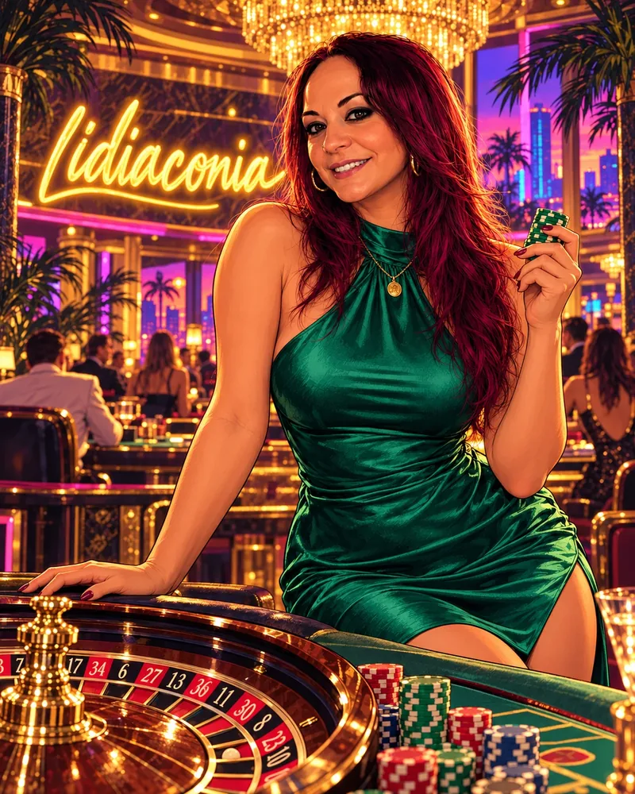
15Ocean Drive
Use the attached photo as the exact face reference: keep her facial features, smile, eye makeup and skin tone identical. Woman with long wavy burgundy-red hair and a small gold coin pendant necklace. Illustrated in the style of GTA VI loading screen art: bold ink outlines, painterly cel shading, saturated Miami-inspired palette, cinematic composition. Glamorous, confident and alluring, tasteful styling. Vertical 4:5 format. Walking toward the camera down a neon-lit beachfront avenue at night, confident runway stride, one hand flipping her hair. Wearing a fitted hot pink blazer dress, belted at the waist, with lapels closed, and gold hoop earrings. Art deco hotels with glowing signs, palm trees, wet reflective street. A huge pink neon sign at the top of the image reads "@lidiaconia" in glowing script. The text "@lidiaconia" must appear clearly and spelled exactly, all lowercase. No other logos.
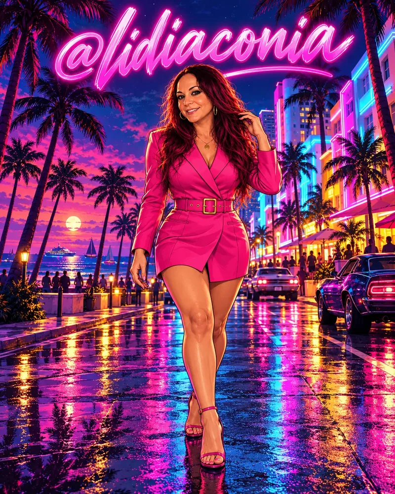
16Setup gamer
Use the attached photo as the exact face reference: keep her facial features, smile, eye makeup and skin tone identical. Woman with long wavy burgundy-red hair and a small gold coin pendant necklace. Illustrated in the style of GTA VI loading screen art: bold ink outlines, painterly cel shading, saturated Miami-inspired palette, cinematic composition. Glamorous, confident and alluring, tasteful styling. Vertical 4:5 format. Sitting sideways in a gaming chair with her legs crossed, one arm resting on the backrest, smiling at the camera. Wearing an open palm-print shirt over a fitted black crew-neck crop top that covers to the waistband, and high-waisted jeans. Multiple monitors showing a neon city, RGB keyboard, a microphone on a boom arm, big window with the night skyline. The monitor wallpaper reads "lidiaconia" in large pink neon letters. The word "lidiaconia" must appear clearly and spelled exactly, all lowercase. No other logos.
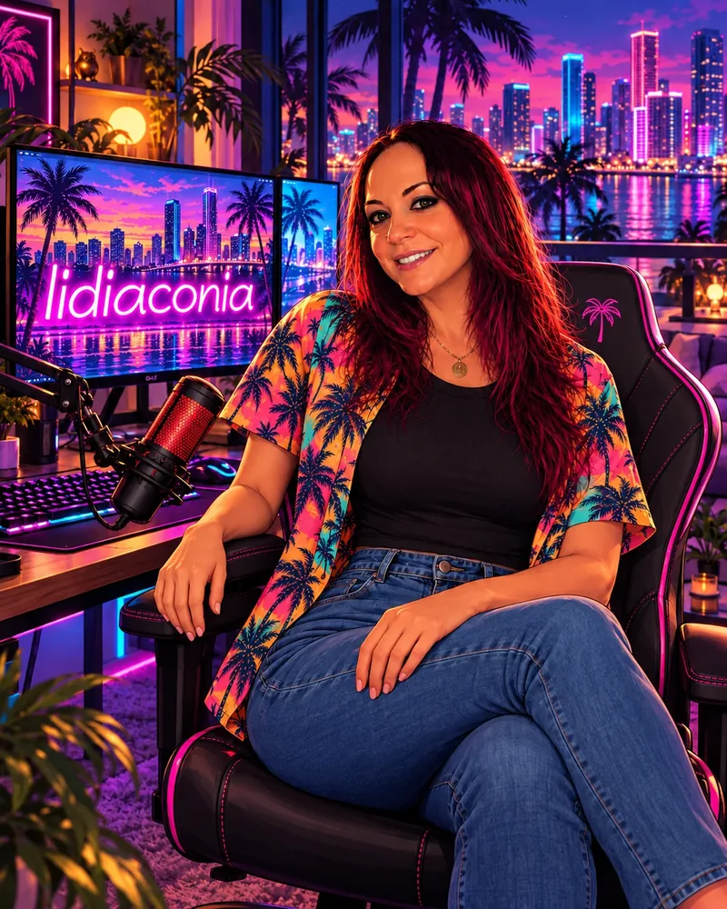
17Lavandería 24h
Use the attached photo as the exact face reference: keep her facial features, smile, eye makeup and skin tone identical. Woman with long wavy burgundy-red hair and a small gold coin pendant necklace. Illustrated in the style of GTA VI loading screen art: bold ink outlines, painterly cel shading, saturated Miami-inspired palette, cinematic composition. Glamorous, confident and alluring, tasteful styling. Vertical 4:5 format. Sitting on top of a washing machine in a 24h neon laundromat at night, legs crossed, one hand resting on her knee, smiling at the camera. Wearing a fitted purple satin slip mini dress with a straight neckline and black lace-up combat boots. Rows of chrome washing machines, pink and cyan fluorescent light, palm trees and a wet street with a parked car visible through the windows. The neon sign above her reads "lidiaconia" in glowing pink script. The word "lidiaconia" must appear clearly and spelled exactly, all lowercase. No other logos.
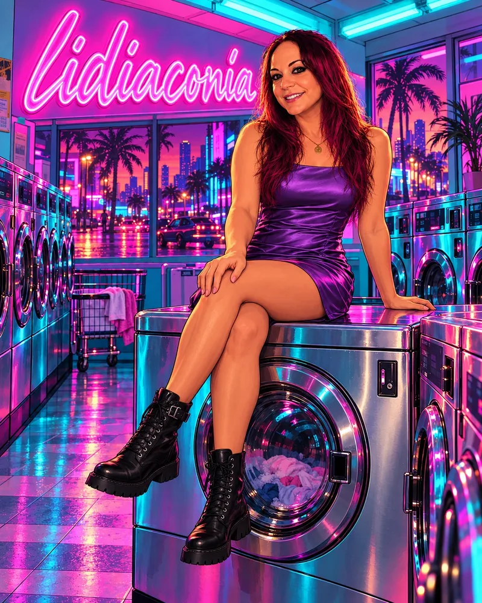
18Ático dorado
Use the attached photo as the exact face reference: keep her facial features, smile, eye makeup and skin tone identical. Woman with long wavy burgundy-red hair and a small gold coin pendant necklace. Illustrated in the style of GTA VI loading screen art: bold ink outlines, painterly cel shading, saturated Miami-inspired palette, cinematic composition. Glamorous, confident and alluring, tasteful styling. Vertical 4:5 format. Leaning against the glass wall of a luxury skyscraper penthouse at sunset, one hand in her pocket, the other resting on a gold railing, confident smile at the camera. Wearing a fitted black sleeveless jumpsuit with a high round neckline and a wide belt with a gold buckle, gold hoop earrings. Floor-to-ceiling windows over a Miami bay full of palm trees, yachts and neon lights, brushed gold panels reflecting the sky. A brushed gold plaque on the wall reads "lidiaconia" in raised letters. The word "lidiaconia" must appear clearly and spelled exactly, all lowercase. No other logos.
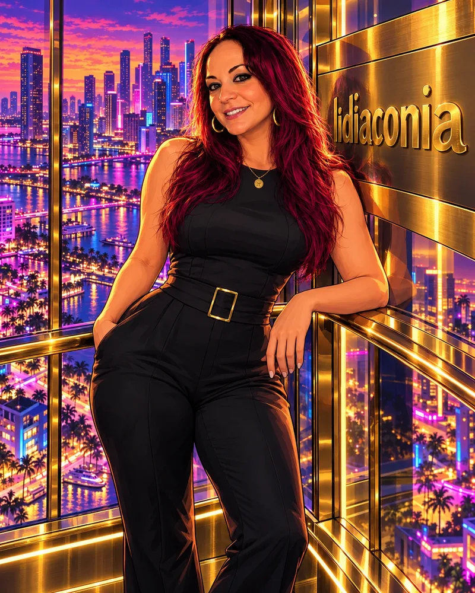
Imágenes de fan inspiradas en el estilo visual de GTA VI. No están afiliadas a Rockstar Games.
¿Quieres aprender a crear imágenes y vídeos así con IA? Apúntate a la lista de espera de la Comunidad Lid.IA.